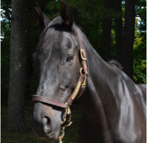
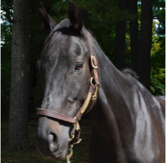

Our Mission Statement
*Solly Stables’ mission is to provide a unique equestrian experience, building self-confidence, fostering independence and caruing for horses by promoting compassion and learning through riding and educational experiences. *Solly Stables strives to achieve this mission regardless of a person's ability to contribute financially.
*Through our 4H program, we want to reach out to kids and teenagers/adults. NO barn seems willing to have kids around these days… *Helping someone who needs a new outlook experience the healing power of the horse spirit is secondary part of our mission, and the most powerful!! We view it as a community event; just being around horses lifts your spirits!!

Solly Stables is a Fairmount Park property operated by Solly Stable Riders Association, located in Fox Chase, Phila., effective July 2010. We are a 501(c)3 charitable organization.


 
